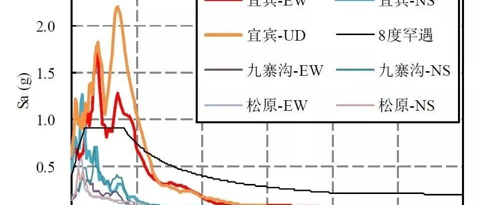

6月17日宜宾长宁县6.0级地震破坏力分析及思考
地震工程学的老祖宗Newmark教授曾经这样描述地震工程的特点：“earthquake engineering is to the rest of the engineering disciplines what psychiatry is to other branches of medicine. (Newmark and Rosenblueth, 1971)”，说地震工程学与其他工程学科相比，就像精神病学和其他医学学科相比：它是如此的复杂，以至于很难透彻的考察其内在机理。
这次宜宾长宁6.0级地震也呈现出这样一个特性。对于大部分台站的记录，地面峰值加速度基本在75cm/s/s以下。照说不会造成那么严重的破坏和人员伤亡。但是在震中附近的地面运动却非常特殊。这次地震51GXT台站测得了约0.6g的峰值加速度，其短周期段反应谱不仅远高于当地设防烈度（6度）反应谱，而且也高于此前九寨沟地震（7级）、20180528松原地震（5.7级）等（图1、2），从而导致了严重的后果。

图1 51GXT强震台记录加速度反应谱

(a) 与鲁甸(6.5级)、芦山(7.0级)地震对比

(b) 与九寨沟(7.0级)、松原(5.7级)地震对比
图2 51GXT强震台记录和我国近年来震中附近强震记录加速度反应谱对比
这再次验证了我们此前一再强调的观点：地震是如此复杂，根据震级来推算某地地面运动强度具有很大的不确定性（参见我们课题组此前文章：为什么需要发展城市抗震弹塑性分析 | 从8.8九寨沟地震和8.21意大利地震谈起）。因此，利用发达的现代强震观测与信号传输网络，在震后第一时间获取当地真实的地面运动，是提升我国抗震救灾决策科学性的重要依据。
另外，地震很复杂，结构的地震响应行为也不简单。如果简单根据0.6g的峰值加速度（几乎相当于我国规范9度罕遇水准）来判断，那当地估计已经一片废墟了。但是结构的地震响应也不仅仅和地震的峰值加速度相关，还和结构自身的振动特性有关。就此次51GXT台站记录而言，虽然其峰值加速度和短周期分量很大，但是0.5s以后中长周期分量衰减很快。也就是说，这个地震对于低矮房屋可能是个王者，但是一旦遇到多层和高层建筑就变成青铜了。所以灾后网上有人拿台湾地震倒塌的高层建筑来传谣，实际上是完全错误的。我们将51GXT台站记录输入到典型单体建筑中进行弹塑性分析，计算结果如表1所示，可见，3层和6层框架的层间位移角不大，结构破坏较轻，这主要是因为分析所用3层和6层钢筋混凝土框架的一阶周期均大于0.5 s。而单层未设防砌体的一阶周期处于51GXT台站反应谱峰值段，因此其破坏更为严重。实际震害调查表明本次地震倒塌房屋73间，严重损坏房屋19间，一般损坏房屋12723间，倒塌建筑主要为低层老旧瓦房（如图3所示），与分析结论一致。


(a) 航拍视角1

(b) 航拍视角2
图3 灾区双河镇航拍影像（图片来源于四川在线）
所以，我们还是要强调，建筑抗震弹塑性分析及城市抗震弹塑性分析，把完整的地震动输入到完整的结构模型里面，求解结构动力学方程来预测震害后果，是一个非常简单，但是也是最能反映地震与结构复杂性的方法。当然，目前我国的强震台网建设还亟待加强，对于这类6级左右的中等地震，极震区范围有限，强震台网密度太小可能无法准确反映极震区的地面运动特征，进而可能会影响震害分析的结果。
同时，城市抗震弹塑性分析还能考虑余震影响（参见本课题组此前文章：如果遭遇与06-18大阪6.1级地震相当的余震，则大阪的损失会怎样？）。宜宾6.0级地震后，不断有余震发生，使灾区人员感到恐慌，其中最大余震为6月18日7时34分在四川宜宾市长宁县发生的5.3级地震，该次地震根据中国地震台网正式测定，震源深度17千米，震中位于北纬28.37度，东经104.89度。我们通过强震台网获取了2个台站的主震和余震地震动记录，将主震记录与余震记录连接到一起即可得到主余震序列，如图4所示。

图4 51YBT台站和51YBG台站记录到的主余震序列
对于已有主余震记录的台站采用实测主余震记录作为输入，对于只有主震记录的台站，根据本次地震最大余震信息，我们构造了该余震情境下各个台站的主余震序列，具体主震-余震模型我们会在后续论文中详细介绍。将实测的和构造的主余震记录输入到灾区建筑群中，运用城市抗震弹塑性分析方法可得在宜宾M6.0-M5.3主余震情境下地震破坏力的分布，如图5所示。对比仅有主震作用下的分布图可知（见详细分析报告中的图10），本次宜宾6.0级地震在考虑5.3级余震的影响后，震害没有明显变化。

图5 宜宾M6.0-M5.3主余震情境下不同台站地震记录破坏力分布图
（建筑抗震承载力取均值）

图6 宜宾M6.0主震情境下不同台站地震记录破坏力分布图（建筑抗震承载力取均值）
以下是本次RED-ACT分析的详细报告，由于技术原因，该报告昨天地震后第一时间只能通过友情网站帮助发布，再次向大家致歉。
====================
RED-ACT: 四川省宜宾市长宁县6.0级地震区域破坏力分析
发布时间 ：2019年6月18日 2时40分
致谢和声明：
感谢中国地震台网中心和四川省地震局为本研究提供数据支持。本分析仅供科研使用，具体灾情和灾损分析应根据现场调查情况确定。
宜宾地震后，我们于17日23:55分（地震后一小时内）发布第一轮分析结果。而后随着新的地震动数据的不断获取，持续发布新的分析结果。

一、地震情况简介
据中国地震台网正式测定，6月17日22时55分在四川宜宾市长宁县发生6.0级左右地震，震源深度16千米。震中位于北纬28.34度，东经104.90度。
二、强震记录及分析
20190617四川省宜宾市长宁县6.0级地震获得了23组地震动，由于地震动没有完全收集，可能还有更强的记录。典型地震记录分析如下：
51GXT记录台站位置北纬28.43度，东经104.70度(图1，其中红色五角星为震中位置)，记录到地震动峰值加速度为599.2cm/s/s。该地震动如图2、图3所示。
C2309记录台站位置北纬28.27度，东经104.38度(图4，其中红色五角星为震中位置)，记录到地震动峰值加速度为75.7cm/s/s。该地震动如图5、图6所示。
51YBT记录台站位置北纬28.71度，东经104.57度(图7，其中红色五角星为震中位置)，记录到地震动峰值加速度为59.0cm/s/s。该地震动如图8、图9所示。

图1 51GXT台站位置

(a) EW

(b) NS

(c) UD
图2 51GXT台站地面运动记录

图3 51GXT台站典型记录反应谱

图4 C2309台站位置

(a) EW

(b) NS

(c) UD
图5 C2309台站地面运动记录

图6 C2309台站典型记录反应谱

图7 51YBT台站位置

(a) EW

(b) NS

(c) UD
图8 51YBT台站地面运动记录

图9 51YBT台站典型记录反应谱
三、地震动对典型城市区域破坏能力分析
利用密布强震台网在震后获取的实时地震动信息，再结合城市抗震弹塑性分析，就可以得到地震发生后不同地点的建筑破坏情况，为抗震救灾决策提供科学支撑。图10为根据 20190617四川省宜宾市长宁县6.0级地震震中附近范围内台站记录分析得到的建筑震害分布示意图，图10(a)为承载力减去一倍标准差震害示意图，图10(b)为承载力取均值震害示意图，图10(c)为承载力加上一倍标准差震害示意图。图11为根据 20190617四川省宜宾市长宁县6.0级地震震中附近范围内台站记录分析得到的人员加速度感受分布示意图。

图10(a) 20190617四川省宜宾市长宁县6.0级地震不同台站地震记录破坏力分布图
（建筑抗震承载力减去一倍标准差）

（建筑抗震承载力取均值）

（建筑抗震承载力加上一倍标准差）

图11 20190617四川省宜宾市长宁县6.0级地震不同台站地震记录人员加速度感受分布图
（建筑抗震承载力取均值）
四、台站附近地震滑坡分析
根据当地地形数据、岩性数据和实测地面运动记录，可以计算得到不同滑坡体饱和比例下的滑坡分布，如图12所示。其中，底图为当地坡度分布图，每个圆圈代表每个台站的计算结果，圆圈中的数字代表发生滑坡的临界坡度，台站附近坡度大于该数值的地方滑坡发生概率高。

(a)滑坡体饱和比例为 0%

(b)滑坡体饱和比例为50%

(c)滑坡体饱和比例为 90%
图12 不同台站附近地震滑坡分布


程庆乐

赵鹏举

郑哲
---End---
相关研究
长按识别二维码，关注我们的科研动态